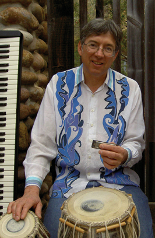
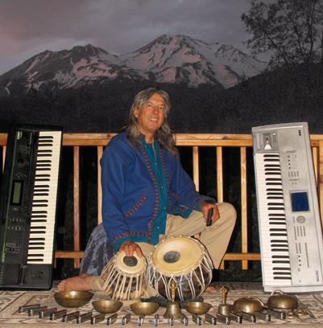
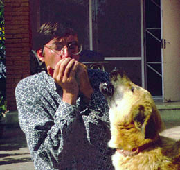
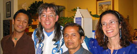

Anton Mizerak
is a composer and multi-instrumentalist who plays tabla, harmonica, synthesizers and piano. Anton is literate in Sanskrit, with an M.A. in the History of Religions. He has an intimate understanding of Asian spiritual and musical traditions which he utilizes to create music that enriches and enlivens the listener.
Anton lives and records in Mount Shasta, California, in a house and studio that he built himself. Anton's many recordings reflect his extensive travels, his love of the natural world, and his desire to impact the world in a positive way through music.


Anton has been performing on piano and harmonica since 1968. In 1988 he began studying tabla (classical Indian drums) in Kathmandu, Nepal, with Homnath Upadhyaya. Much of Anton's music reflects his cross-cultural musical experimentation, combining harmonica and synthesizers with traditional Asian melodic and percussive instruments.

top center - Anton & instruments in San Diego
top right - Anton & instrumentat new studio porch in Mount Shasta
left - Harmonica duet in Kathmandu

Manose, Anton, Homnath & Natalie
In 1998 Anton began touring with Manose Singh Newa. Throughout the years they have recorded three meditation/healing CDs together: When Angels Dream, When Angels Dream 2 and When Angels Dream 3. They have perfromed for Neal Donald Walsh, Michael Beckwith, Jean Houston and Dipak Chopra. In 2004, Anton began touring with Celtic guitarist Michael Mandrell and Canadian folk singer, Kim Lorene. Anton and Michel still play together on a yearly basis.

Brazil tour group at Shastasong
Since 2010, Laura Berryhill and Anton have performed at over a hundred New Thought centers throught the Western United States. In 2014, Anton and Laura opended their Shastasong performance venue and began playing concerts in Mount Shasta and also performing for foreign tour groups. Every summer they play for groups from Mexico, Argentina, Brazil, Isreal and Japan, along with many other coutries throught the world. If you are a tour group leader and want a tranformationl healing music event or an ecstatic Kirtan contact Anton: shastasong@snowcrest.net
Since 2023 Anton and Laura have been working as spirtual mountain tour guides for Mount Shasta Retreat. They view their guiding as an extension of their musical ministry.

In 1998 Anton began perfoming at the annual Centers for Spiritual Living Asilomar Gathering. In 2009 he was awarded the Hazel Holmes Award for lifetime service to the Asilomar gatherings. Throughout the years he has performed with Karen Drucker, Rickey Beyers, Michael Gott, Jamey Lula, Melissa Phillippe and Eddie Watkins Junior. Since 2014 Anton and Laura have been a music directors for the Spiritual Living Retreat at Asiomar where they have performed with Karen Drucker, Jamie Lula, Micheal Mandrell and Manose Newa.
Since 2020 Anton and Laura have been a music directors at the Center for Spiritual Living Rogue Valley.


In 2017 Anton began playing tabla for Kirtan with Ganeshadas. In 2022 he began playing tabla with Madhurai and in 2023 he came our with his own collaborative Kirtan group Parvati featuring himeslf, Laura Berryhill and Alyssa Narum. In March 2023 Parvati performed at Narayanthan in Kathmandhu while studying classical Indian vocals with Prabhuraj Dhakal.
Anton's tour partners include:
Laura Berryhill: singer who first toured with Anton in 1997. Since 2010 Laura and Anton played up to 180 performances per year together. They are music directors at an annual Spiritual Living Retreat at Asilomar. Since 2020 they are the music coordinators at the Center for Spiritual Living Rogue Valley in Medford, Oregon and staff musicians at Unity Church in Redding, California. Laura sings on When Angels Dream 2 and on When Angels Dream 3. Laura is a member of the Kirtan supergroup Parvati along with Anton and Alyssa Narum.
Alyssa Narum: singer, harmonium and guitar player and member of the Kirtan supergroup Parvati. Studied music at University of Cincinnati College-Conservatory of Music - CCM and University of North Texas.
Madhurai Sumhara: Kirtan leader and harmonium player from Ashland, Oregon who leads tours to India.
Manose: bamboo flautist from Kathmandu, Nepal, winner of the 1995 radio Nepal instrumentalist of the year award.
Manose plays bansuri on When Angels Dream, When Angels Dream 2, When Angels Dream 3 and Harmonica Sunset.
Michael Mandrell: open-tuning style guitarist who infuses his original melodies with Indian scales and a Celtic lilt. Michael plays guitar on When Angels Dream 3 and Harmonica Sunset.
Corbin Keep: Canadian "wild man" cellist who plays on When Angels Dream 3.
Richard Hardy: flutes, pennywhistle and soprano sax player who performed and recorded with Carol King for fourteen years. Richard plays on Desert Bloom and Harmonica Sunset.
Olof Soderback: accordian and fiddle player, born in Sweden, who enchants audiences with his vast repetoire of European and Indian folk music. Olof plays eleven-stringed viola on Harmonica Sunset.
Ganeshadas: singer and ektar player from Ashland, Oregon who led Friday night Kirtan at Harbin Hotsprings.
Christopher Daniels: Kirtan leader and guitar player from Ashland, Oregon.
Anton's past tour partners include: David Akash, Gary Cooper, Theresa May, Natalie, Kim Lorene, and Tracey Rae Clark
Watch Roosters in the Henhouse with Homnath Upadhyaya 2010 Watch Radhe Radhe 2011 Watch Ocean of Bilss Watch Blarney Pilgrim Watch Tara Mantra 2011 Watch Shiva Shambho 2011 Watch The Mermaid's Song 2011 Watch Iberian Nocture 2010 Watch Harmonica Sunset 2020 Watch Thank you for being in the world 2020 Watch Amazing Grace 2021 Watch Gopi Gopala 2023 Watch The Lords Prayer 2023
Home Page Anton's CDs Ordering info Parvati Kirtan Band Tour Schedule Anton's extended bio